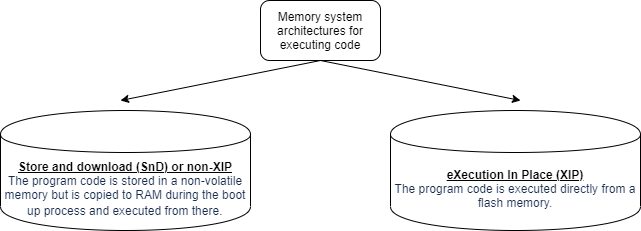
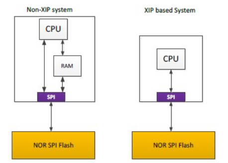

9.5. XIP Using Two Appimages¶
9.5.1. Rom An Application¶
ROMing an application or running from XIP is running from a read-only memory - essentially XIP boils down to running an application from a read-only memory.
9.5.2. What is XIP?¶
 In order to take advantage of the XIP mode, two conditions must be fulfilled:
The NOR flash (or flash device in general) device must support DAC mode
- The microcontroller’s SPI controller must support XIP mode
Burst mode of access - no byte access but a 32bit accesses only in XIP mode
As code must be in memory to be executed, XIP requires a memory-mappable device such as a RAM, ROM, or a NOR Flash.
The serial NOR flash memory is mapped in the microcontroller’s memory space and is seen as another memory by the processor.
9.5.2.1. Normal Mode v/s XIP Mode¶
From a SPI protocol perspective, a READ command is composed of three phases: instruction opcode, address and data. XIP mode requires only an address (no instruction) to output data, improving random access time and eliminating the need to shadow code onto RAM for fast execution.
9.5.3. Why XIP?¶
Improve startup/boot time - Initial time of copying code from flash to RAM is saved
Size of on-chip RAM will not limit the application size
NOTE: Slower than internal memory - 2.5 - 3x times worse than OCM
9.5.4. TWIN APPIMAGE GENERATION¶
The xx_component.mk must have these two present for twin appimage generation.
export *_testapp_SBL_APPIMAGEGEN = yes
export *_testapp_SBL_XIP_APPIMAGEGEN = yes
For each CPU, the compiler+linker toolchain is used to create the application .out “ELF” file which can be loaded and run via CCS
- The below “post build” steps are then used to convert the application .out into a “flash” friendly format
For each CPU, out2rpc is used to convert the ELF .out to a binary file containing only the loadable sections. This is called a RPRC file.
For each CPU, xipGen is used to split this RPRC file into two RPRC files.
One RPRC, containing the section that during boot need to be loaded to RAM
Second RPRC, containing the section that during boot are not loaded to RAM but are instead “eXecuted In Place”, i.e XIP
multiCoreGen is then used to combine all the non-XIP RPRC files per CPU into a single .appimage file which is a concatenation of the individual CPU specific RPRC files.
multiCoreGen is used again to combine all the XIP RPRC files per CPU into a single .appimage_xip file which is a concatenation of the individual CPU specific RPRC XIP files.
This .appimage and .appimage_xip is then flashed to the EVM
9.5.4.1. MULTICORE APPIMAGE GENERATION¶
Add this to your multicore generation script
MULTICORE_IMG_PARAMS_XIP = $(foreach SOC_CORE_ID, $(ipc_perf_test_$(SOC)_CORELIST), $(SBL_CORE_ID_$(SOC_CORE_ID)) $(BINDIR)/$(RPRC_PREFIX)_$(SOC_CORE_ID)_$(BUILD_PROFILE_$(CORE)).rprc_xip)
$(ECHO) "# MULTICORE_IMG_PARAMS_XIP are $(MULTICORE_IMG_PARAMS_XIP)"
$(SBL_IMAGE_GEN) LE $(SBL_DEV_ID) $(BINDIR)/$(RPRC_PREFIX)_all_cores_$(BUILD_PROFILE_$(CORE)).appimage_xip $(MULTICORE_IMG_PARAMS_XIP)
$(ECHO) "#"
$(ECHO) "# Multicore IPC App image $(BINDIR)/$(RPRC_PREFIX)_all_cores_$(BUILD_PROFILE_$(CORE)).appimage_xip created."
$(ECHO) "#"
$(ECHO) "# Signing the multicore image...."
9.5.4.2. Section Placement¶
Attributes: r-x or r– => Flash
Attributes: rw- => RAM
9.5.4.3. Linker File Usage¶
Linker File
MEMORY
{
...
...
XIP_FLASH_1 : origin=0x501C0000 length=0x40000
XIP_FLASH_2 : origin=0x50200000 length=0x10000
...
...
}
SECTIONS
{
...
...
.text : {} palign(8) > XIP_FLASH_1
.const : {} palign(8) > XIP_FLASH_2
...
...
}
9.5.4.4. Map File Usage¶
Build your application normally (non-xip) and then look at the attributes of different sections.
Section attributes (R/W/X) tell you exactly what sections can be placed where.
9.5.4.5. Cache setting change¶
The OSPI memory region must be marked as cacheable.
9.5.4.5.1. Barermetal/FreeRTOS¶
Include a mpu_config.c file and add the following entry
#include <ti/csl/arch/csl_arch.h>
const CSL_ArmR5MpuRegionCfg gCslR5MpuCfg[CSL_ARM_R5F_MPU_REGIONS_MAX] =
{
...
...
{
//Region x configuration: Covers first 64MB of EVM Flash (FSS DAT0) *
.regionId = xU,
.enable = 1U,
.baseAddr = 0x50000000,
.size = CSL_ARM_R5_MPU_REGION_SIZE_64MB,
.subRegionEnable = CSL_ARM_R5_MPU_SUB_REGION_ENABLE_ALL,
.exeNeverControl = 0U,
.accessPermission = CSL_ARM_R5_ACC_PERM_PRIV_USR_RD_WR,
.shareable = 0U,
.cacheable = (uint32_t)TRUE,
.cachePolicy = CSL_ARM_R5_CACHE_POLICY_WB_WA,
.memAttr = 0U,
},
...
...
}
9.5.4.6. How To Flash¶
9.5.4.6.1. Installation¶
Install uniflash 6.3 from http://www.ti.com/tool/UNIFLASH
Note : Uniflash 6.3 does not support .appimage_xip file. Support for this would be added in Uniflash 6.4. Please follow the below steps after installing Uniflash.
cd <pathToPDKRepo>/packages/ti/board/utils/uniflash/host/
make all (Linux) or gmake all (Windows)
copy ProcessorSDKSerialFlash (Linux) or ProcessorSDKSerialFlash.exe (Windows) to <pathToUniflashDirectory>\processors\
cd <pathToPDKRepo>/packages/ti/build/
make board_utils_uart_flash_programmer BOARD=j7xx_evm CORE=mcu1_0 -sj8
copy <pathToPDKRepo>/packages/ti/binary/uart_j7xx_evm_flash_programmer_release.tiimage to <pathToUniflashDirectory>\processors\FlashWriter\j7xx_evm
9.5.4.6.2. BootModes¶
MODE |
Switch Settings |
|---|---|
UART |
SW3: 0xxxxxxx, SW8: 00000000, SW9: 01110000 |
OSPI |
SW2: 0xxxxxxx, SW3: 00000000, SW9: 01000000 |
9.5.4.6.3. Steps To Flash¶
Change boot mode to UART boot mode.
- Connect to the 2nd instance of MCU UART and power on
You should see ‘CCC…’ being printed on the console.
Once validated, close this instance of the UART (the UART device needs to be free to transfer data)
- Navigate to the uniflash installed directory
dslite.sh should be present here
Run the following commands to flash
UART SBL and tifs : ./dslite.sh --mode processors -c /dev/ttyUSB1 -f <pathToUniflashDirectory>/processors/FlashWriter/am65xx_evm/uart_am65xx_evm_flash_programmer_release.tiimage -i 0 OSPI SBL : ./dslite.sh --mode processors -c /dev/ttyUSB1 -f <pathToPDKRepo>/pdk/packages/ti/boot/sbl/binary/am65xx_evm/ospi/bin/sbl_ospi_img_mcu1_0_release.tiimage -d 3 -o 0 TIFS : ./dslite.sh --mode processors -c /dev/ttyUSB1 -f <pathToPDKRepo>/pdk/packages/ti/drv/sciclient/soc/V0/tifs.bin -d 3 -o 80000 Appimage : ./dslite.sh --mode processors -c /dev/ttyUSB1 -f <pathToMcuswRepo>/mcusw/binary/can_profile_xip_app/bin/am65xx_evm/can_profiling_xip_app_mcu1_0_release.appimage -d 3 -o 100000 Appimage_xip : ./dslite.sh --mode processors -c /dev/ttyUSB1 -f <pathToMcuswRepo>/mcusw/binary/can_profile_xip_app/bin/am65xx_evm/can_profiling_xip_app_mcu1_0_release.appimage_xip -d 3
Power off the board and change bootmode to OSPI.
Power on the board
9.5.4.7. Debug Care Abouts¶
- Debugging using CCS
Put a software loop in you program.
Connect CCS and load symbols for your application.
Clear the loop and debug further.
- Disable few options in Program/Memory Load Options
Software breakpoints are not allowed. But in Program/Memory Load Options for the core (Right clock on core on Debug view→ Open GEL files view → Program/Memory Load Options), few defaults options need software breakpoints. They need to be disabled, otherwise you might see an error while loading symbols for debugging.
- Uncheck the following:
“Halt at program exit for TI compilers (requires a breakpoint)”
“Enable CIO function use (requires setting a breakpoint)”
- Always use HW breakpoints
Putting a breakpoint in CCS will need to write a BKP instruction and writing to FLASH will cause a crash or the breakpoint will not be activated
Sometimes SW breakpoints might work as the code might be in cache
Note that there is a limit to the number of HW breakpoints one can set. Essentially the HW breakpoint is writing to some R5F register saying that halt if this address comes. Such registers are limited and hence the number of HW breakpoints.

9.5. XIP Application on J721E¶
xip_testapp
can_profile_xip_app
9.5.5. Known Issues¶
Closing the flash doesn’t work if the OSPI controller is in XIP mode.
9.5.6. Useful Links¶
Linker command file: http://downloads.ti.com/docs/esd/SPRU513J/Content/SPRU513J_HTML/linker_description.html
Linker command file basic: http://software-dl.ti.com/ccs/esd/documents/sdto_cgt_Linker-Command-File-Primer.html
Load and run section: http://downloads.ti.com/docs/esd/SPRU513/load-and-run-addresses-slau1317366.html
Micrium documentation: https://doc.micrium.com/display/TECHOV/NOR+Flash+XIP